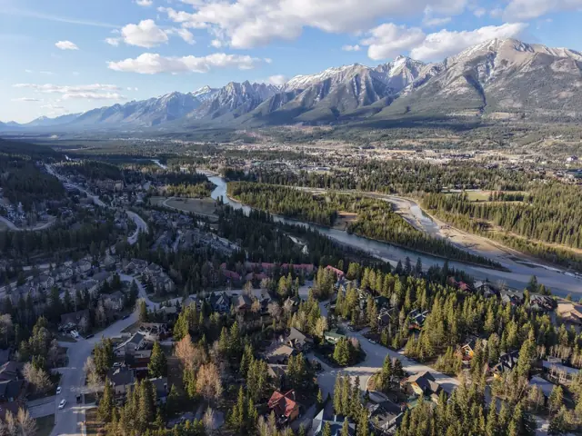
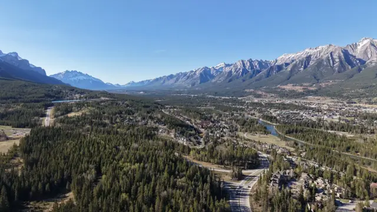
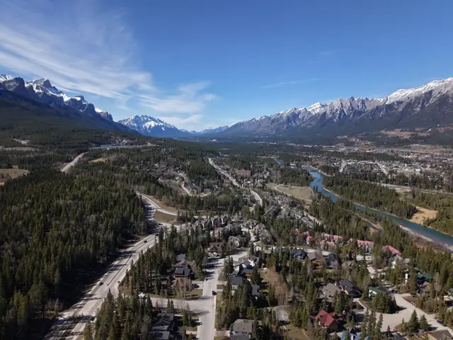
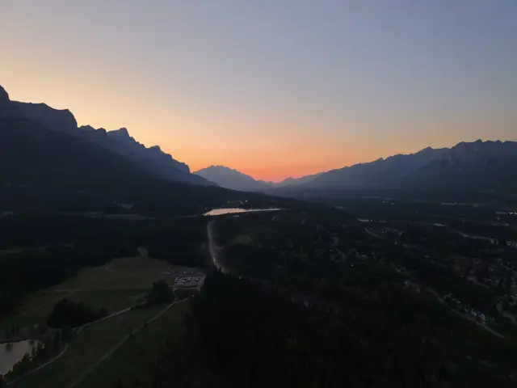
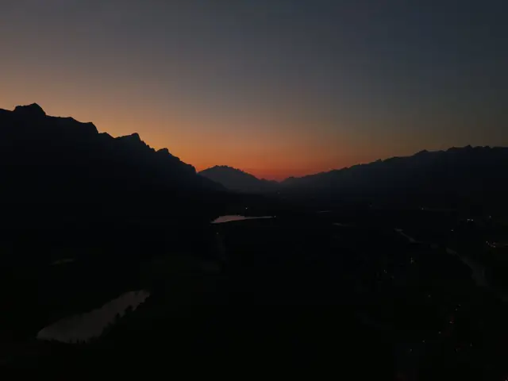
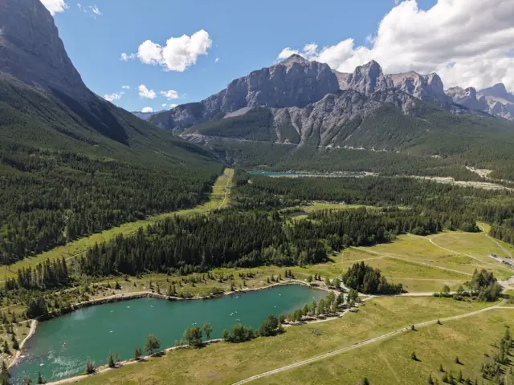
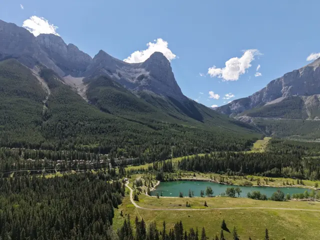
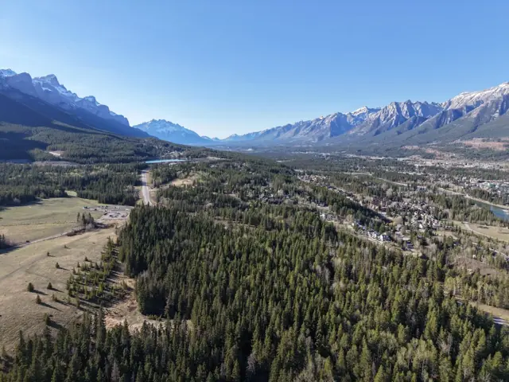

01Where it started
I've been earning my own money since 2019: snow removal, yard care and construction help for local residents. The first ideas for a company of my own came in 2020, and Syme Skyworks was founded in 2023.
The name says what it does. The tagline is “Where the site meets the sky”: work on the ground, and work from the air above it.
02What the company does
Drone inspections of structures, rooftops and hard-to-reach areas.
Aerial surveys, mapping and construction progress monitoring.
Aerial photography and 4K video for real estate, marketing and events.
Construction labour and site support, log stripping, yurt builds, foundation help and material runs.
I run the jobs as well as fly them: I hire, schedule and supervise a part-time worker, prepare client invoices and track payments.
03Flying it properly
Commercial drone work has rules. I hold Transport Canada's Drone Pilot Certificate for Basic Operations, and the FAA's recreational safety certificate (TRUST) as well.
The aircraft is a DJI Air 3S, used for inspections, surveys and 4K photo and video.
04From the air
A few of my own aerial photographs. Select one to see it larger.


River and ridge line

Valley panorama Golden hour
Golden hour

Above the valley road

Last light Spring along the river
Spring along the river First snow
First snow A lake, straight down
A lake, straight down

Twilight ridge line

Lake below the peaks

Meadow and lake

The valley from above05The brand and the website
In November 2026 the company adopted a mission patch as its logo, with simpler versions for small sizes, and the website was redesigned in the same navy, brass and cream look as my other projects.
One page, no frameworks
The site is a single fast page with no build step and no web fonts: services, pricing, a gallery, questions and answers, and a contact form.
Photos that load when needed
Gallery photos load lazily from small thumbnails, and a viewer opens the full picture.
06What went wrong
The first website kept all twelve photos inside its one HTML file, which made the page about 4.2 MB before anything could appear.
A page should load what the visitor is looking at, not everything it owns. The photos moved into separate files with thumbnails, four duplicates were removed, and the gallery now loads small thumbnails first.
07What I learned
A company is mostly not the exciting part. The flying is a small share of the work; the rest is showing up, quoting clearly, invoicing, and doing the job the way I said I would.